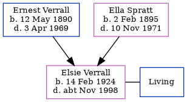

Elsie Amy Burton (née Verrall) 1924 - c1998
[ Home ] | [ Calendar ] | [ Surnames Index ] | [ Family History ]The 2nd of 5 children of Ernest Verrall (a window cleaner) and Ella Spratt (a charwork)Elsie Verrall, the first cousin once-removed on the father's side of Nigel Horne, was born in Thanet, Kent, England on Feb 14, 19241,2. She married Richard Burton in Thanet around May 19733. On Sep 29, 1939, she lived at 74 Invicta Road, Margate, Kent, England. That is also where she died c. Nov 1998 in Thanet2.
Parents
- Ernest Charles was born on May 12, 1890
- Ella was born on Feb 2, 1895
Citations
- England & Wales births 1837-2006 - Findmypast
- England & Wales deaths 1837-2007 - Findmypast
- England & Wales Marriages 1837-2005 - Findmypast
Media
1939 Register Transcription - TNA-R39-1756-1756B-015-18
England & Wales births 1837-2006 - BMD/B/1924/1/AZ/001389/136
1939 Register Transcription - TNA-R39-1756-1756B-015-17
England & Wales marriages 1837-2008 - BMD/M/1973/2/AZ/001738/015
England & Wales deaths 1837-2007 - BMD/D/1998/10/82394431
Family Tree
Generated by ged2site. Last updated on Nov 13, 2024